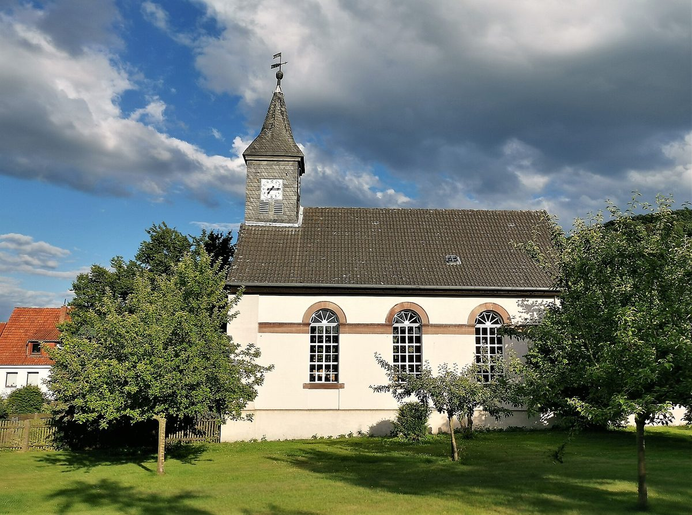

독일 주민 1,000명 마을의 주민 열망 사업 2년 만에 해산…핵심 열원 기업 빠지고 새 주민은 히트펌프 택해

괴팅겐 근처 라이어스하우젠 주민 조합, 우유회사 바이오가스 열만으로는 모자라…설계사무소가 적정 요금으로는 어렵다고 결론 내자 회원총회가 해산 의결, 지자체 도움으로 손실 없이 정리
독일 괴팅겐 근처 보벤덴 읍의 주민 약 1,000명 마을 라이어스하우젠에서 주민들이 꾸린 마을 열망(지역 난방망) 사업이 2년 만에 접혔다. 2023년 마을 열망을 깔겠다며 세운 민법상 조합(GbR) '에네르기 라이어스하우젠'은 회원총회에서 해산을 의결하고 경영진에게 청산을 맡겼다. 조합은 플레세 우유회사(Plesse-Milch)의 바이오가스 설비 열과 기업 DBW Advanced Fiber Technologies의 열을 두 열원으로 삼았지만, DBW가 2025년 자기 열을 2026년부터 직접 쓰겠다고 결정하면서 첫 계획이 무너졌다. 조합은 오랫동안 다른 열원을 찾았으나 우유회사 열만으로는 모자랐고, 새로 이사 온 주민 상당수는 히트펌프 난방을 원해 열망에 관심을 보이지 않았다. 외부 설계사무소는 마을에 긴 내리막 구간이 있는 점 등을 들어 DBW 없이는 주민이 감당할 만한 요금으로 열망을 운영할 수 없다고 결론 냈다. 조합 경영진 랄프 엥겔은 지자체의 도움으로 손실 없이 사업을 마무리하게 됐고, 이 사업을 계기로 서로 알 일이 없던 주민들이 이어졌다고 말했다.
시민에너지 관점
라이어스하우젠 사례는 두 열원 가운데 한 기업이 자기 열을 직접 쓰겠다며 빠지자 남은 열로는 사업이 서지 않고, 새 주민들이 각자 히트펌프를 고르며 가입 수요까지 줄어든 전형적인 실패 경로를 보여 준다. 그렇다고 주민 사업이 위험하다고 볼 일은 아니다. 이 조합은 지자체의 뒷받침으로 손실 없이 정리했고, 실패의 원인도 주민 소유 구조가 아니라 외부 열원 하나에 기댄 설계에 있었다. 열원·부지 같은 핵심 자원은 장기 계약으로 묶고, 새 주민까지 포함한 가입 의향을 사업 초기에 넓게 확인하며, 실패해도 주민 손실을 막을 지자체 안전장치를 처음부터 함께 설계하도록 국내 마을 단위 재생에너지·열 사업 제도를 다듬어야 한다.
출처: HNA 2026-11-05 Ute Lawrenz 원문 보기
ドイツの人口1,000人の村で住民による地域熱供給事業が2年で解散…主要熱源の企業が離脱、新住民はヒートポンプを選択
ゲッティンゲン近郊ライヤースハウゼンの住民組合、乳業会社のバイオガス熱だけでは不足…設計事務所が適正料金では困難と結論し会員総会が解散を議決、自治体の支援で損失なく清算
ドイツ・ゲッティンゲン近郊ボーヴェンデン町にある人口約1,000人の村ライヤースハウゼンで、住民がつくった地域熱供給網（ナーヴェルメ）事業が2年で幕を下ろした。2023年に地域熱供給網の整備を目的に設立された民法上の組合（GbR）「エネルギー・ライヤースハウゼン」は会員総会で解散を議決し、経営陣に清算を委ねた。組合は乳業会社プレッセ・ミルヒのバイオガス設備の熱と、企業DBW Advanced Fiber Technologiesの熱を二つの熱源としていたが、DBWが2025年に自社の熱を2026年から自ら使うと決めたことで当初の計画が崩れた。組合は長く別の熱源を探したが乳業会社の熱だけでは足りず、新たに転入した住民の多くはヒートポンプ暖房を望み、熱供給網に関心を示さなかった。外部の設計事務所は、村に長い下り坂区間があることなどを挙げ、DBWなしでは住民が負担できる料金で熱供給網を運営できないと結論づけた。組合経営陣のラルフ・エンゲル氏は、自治体の支援で損失なく事業を終えることができ、この事業をきっかけに普段は接点のなかった住民同士がつながったと語った。
市民エネルギーの視点
ライヤースハウゼンの例は、二つの熱源のうち一社が自社で熱を使うとして抜けると残る熱では事業が成り立たず、新住民がそれぞれヒートポンプを選んで加入需要まで減るという、典型的な失敗の道筋を示している。だからといって住民事業が危ういとみるべきではない。この組合は自治体の後押しで損失なく清算しており、失敗の原因も住民所有の仕組みではなく、外部の熱源一つに頼った設計にあった。熱源や用地といった中核資源は長期契約で確保し、新住民も含めた加入意向を事業の初期に広く確かめ、失敗しても住民の損失を防ぐ自治体の安全装置を最初から一緒に設計するよう、韓国の集落単位の再生可能エネルギー・熱事業の制度を整えるべきだ。
出典: HNA 2026-11-05 Ute Lawrenz 原文を読む
德国千人村庄居民区域供热项目两年后解散…主要热源企业退出，新居民选择热泵
哥廷根附近莱尔斯豪森的居民合伙组织，仅靠乳品公司沼气余热不够…设计事务所认定难以按合理价格运营后，成员大会决议解散，在地方政府帮助下无亏损清算
在德国哥廷根附近博文登镇、约有1,000名居民的村庄莱尔斯豪森，由居民组建的村级区域供热网项目两年后宣告终止。2023年为建设区域供热网而成立的民法合伙组织（GbR）"莱尔斯豪森能源"在成员大会上决议解散，并委托管理层进行清算。该组织原以普莱瑟乳品公司（Plesse-Milch）沼气设备的余热和DBW Advanced Fiber Technologies公司的余热作为两个热源，但DBW在2025年决定从2026年起自行使用其余热，最初的计划随之落空。该组织长期寻找其他热源，但仅靠乳品公司的热量不够，而且许多新迁入的居民希望用热泵取暖，对区域供热网缺乏兴趣。外部设计事务所指出村里有较长的下坡路段等因素，认定没有DBW就无法以居民可承受的价格运营供热网。该组织管理层成员拉尔夫·恩格尔表示，在地方政府帮助下项目得以无亏损收尾，这个项目也让一些原本不会有交集的居民走到了一起。
市民能源视角
莱尔斯豪森的案例展示了一条典型的失败路径：两个热源中的一家企业决定自用余热而退出后，剩下的热量撑不起项目，新居民各自选择热泵又让入网需求减少。但不能因此认为居民项目风险太大。该组织在地方政府支持下无亏损清算，失败的原因也不在居民所有的结构，而在于依赖单一外部热源的设计。韩国村级可再生能源和供热项目的制度也应完善，促使项目用长期合同锁定热源、用地等核心资源，在初期就广泛确认包括新居民在内的加入意愿，并从一开始就设计好即使失败也能防止居民受损的地方政府安全机制。
来源: HNA（黑森/下萨克森汇报） 2026-11-05 Ute Lawrenz 查看原文
Residents' heat network in a German village of 1,000 is wound up after two years as a key heat supplier pulls out and newcomers opt for heat pumps
The residents' partnership in Reyershausen near Göttingen could not run on heat from a dairy's biogas plant alone; after planners concluded fair prices were impossible, members voted to dissolve and, with the municipality's help, close without a loss
A village heat network project set up by residents of Reyershausen, a village of about 1,000 people in the municipality of Bovenden near Göttingen in Germany, has been abandoned after two years. Energie Reyershausen GbR, a civil-law partnership founded in 2023 to build the network, voted at its members' meeting to dissolve and handed its managers the task of winding it up. The partnership had counted on two heat sources, the biogas plant of the dairy Plesse-Milch and the company DBW Advanced Fiber Technologies, but its original plan collapsed when DBW decided in 2025 to use its own heat from 2026. The partnership searched for another source for a long time, but the dairy's heat alone was not enough, and many newcomers to the village wanted heat pumps and showed no interest in the network. An outside planning firm concluded that, partly because of long downhill stretches in the village, the network could not be run at prices residents could afford without DBW. Ralf Engel of the partnership's management said that with the municipality's support the project would close without a loss, and that it had brought together people who might otherwise never have met.
Citizen Energy View
Reyershausen shows a typical path to failure: when one of two heat suppliers withdrew to use its own heat, what remained could not carry the project, and newcomers each choosing heat pumps shrank demand further. That does not mean resident-led projects are too risky. This partnership closed without a loss thanks to the municipality, and the failure lay not in community ownership but in a design that relied on a single outside heat source. Korea's rules for village-level renewable power and heat projects should push them to lock in core resources such as heat and land with long-term contracts, test interest widely at the start, including among new residents, and build a municipal safety net from day one so residents do not lose money if things go wrong.
Source: HNA (Hessische/Niedersächsische Allgemeine) 2026-11-05 Ute Lawrenz Read the original